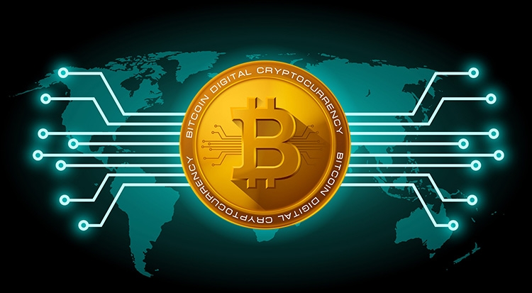
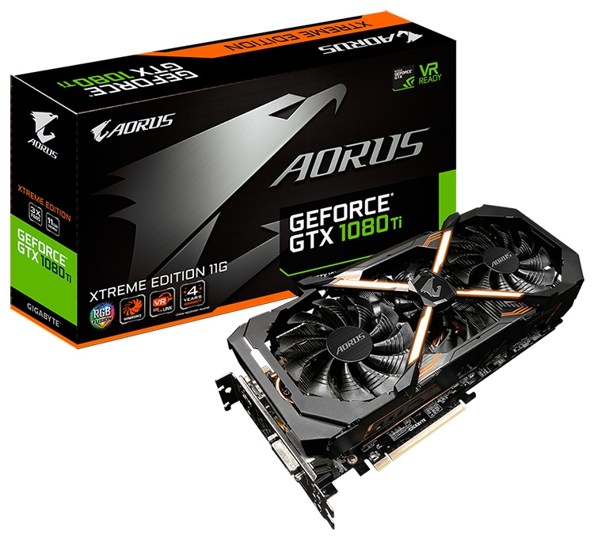
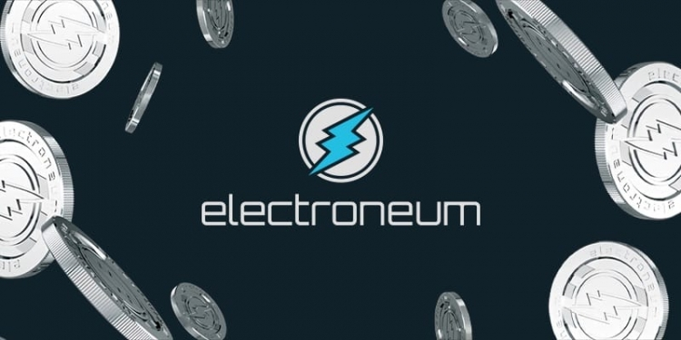
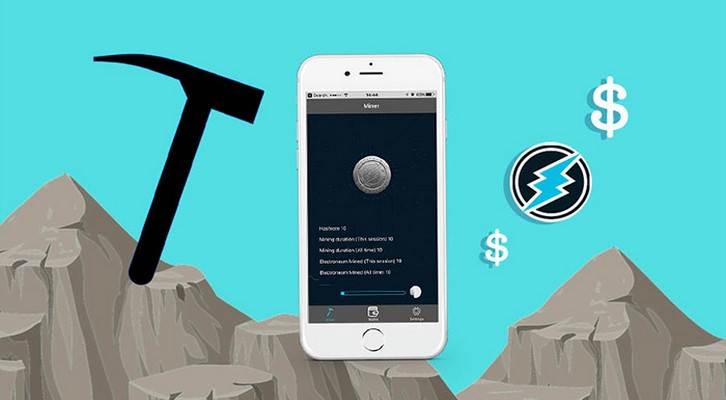
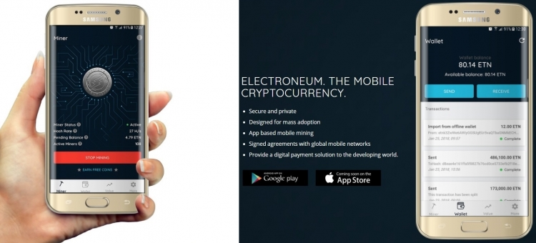
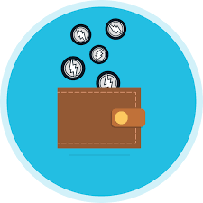
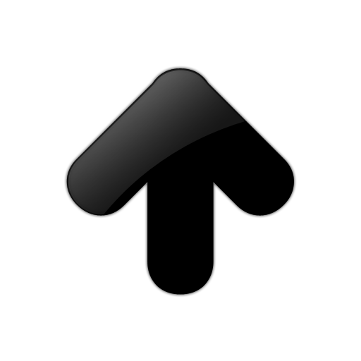

Новости Экономики
Российский рынок видеокарт: цены бьют рекорды, но дефицит снижается
Апгрейд игрового настольного ПК в последнее время превратился в нетривиальную задачу из-за дороговизны памяти (особенно оперативной) и видеокарт. Начиная с весны прошлого года добытчики криптовалют подстёгивали цены на графические адаптеры своим стремлением собирать «ферму» за «фермой», и в итоге возник общемировой дефицит GeForce и Radeon. Правда, более чем трёхкратное снижение курса биткоина по отношению к доллару США в период с 18 декабря по 5 февраля существенно охладило пыл энтузиастов майнинга.
 Соответственно, видеокарт на прилавках стало больше, а удерживать завышенные цены на них — сложнее. Самыми востребованными моделями видеокарт в России по итогам прошлого года стали GeForce GTX 1050 Ti (из семейств MSI Gaming X, Gigabyte G1 Gaming, Gigabyte WindForce OC и Palit StormX), а также ускоритель Gigabyte Aorus GeForce GTX 1080 Ti Xtreme Edition.
Текущие минимальные цены на игровые адаптеры разного уровня в среднем немного ниже, чем три недели назад, что по большей части связано с «похолоданием» на криптовалютных биржах:
- GeForce GTX 1060 6GB: от 26 091 руб. (−14,8 % к 16 января);
- GeForce GTX 1070: от 37 990 руб. (−13,4 %);
- GeForce GTX 1070 Ti: от 44 991 руб. (−8,2 %);
- GeForce GTX 1080: от 48 900 руб. (−18,5 %);
- GeForce GTX 1080 Ti: от 68 990 руб. (−11,9 %).
08.02.2018
Electroneum станет первой криптовалютой, обсуждаемой на выставке MWC
 Правовой статус криптовалютного рынка по-прежнему остаётся под знаком вопроса в большинстве цивилизованных стран.
Законодательное регулирование деятельности криптобирж и попытки взять под контроль как майнеров-одиночек, так и «шахтёров», добывающих криптовалюту в промышленных масштабах, идут в разрез с основным принципом анонимности блокчейн-транзакций.
К массированной атаке на криптовалютный сектор, которую эксперты называют хорошо спланированной и целенаправленной травлей «определённых структур», недавно присоединилась и Facebook. Администрация социальной сети пообещала удалять объявления о криптовалютах и ICO с последующим баном владельца аккаунта, приравняв подобные сообщения к рекламе...
Однако не всё так пасмурно на криптовалютном небе и некоторым монетам всё же удаётся прорваться сквозь образовавшийся правовой, медийный и прочие заслоны. В их числе оказалась криптовалюта Electroneum (ETN), создатели которой были приглашены на MWC 2018.
 Разработчики Electroneum, являющейся форком Monero, ориентируют своё детище на мобильную индустрию. В отличие от однотипных и ничем не примечательных монет на алгоритме CryptoNight, которыми сейчас перенасыщен крипторынок, ETN намерена стать воплощением уникальной концепции с прицелом на пользователей смартфонов. Ключевой «фишкой» Electroneum значится так называемый мобильный майнинг — добыча монет при помощи смартфонов/планшетов, для которой не потребуется ни навыков, ни опыта, ни знаний по данной тематике. Стать майнером смогут все без исключения пользователи современных Android-смартфонов (в перспективе — поддержка платформы iOS).
 Заработанные ETN могут быть или выведены через биржу в фиат, или же использоваться для оплаты услуг от партнёрских сервисов напрямую. Стоит отметить, что мобильный майнинг — это всего лишь условная эмуляция майнинг-процесса через мобильное ПО, не нагружающая ни процессор, ни графическое ядро вашего смартфона.
Стать первой криптовалютой, о которой пойдёт речь в рамках MWC 2018, проекту Electroneum удалось не случайно. Основателю проекта Ричарду Элсу (Richard Ells) поступило предложение выступить на конференции по мобильным технологиям после того, как его компания стала членом сообщества GSMA.
Данная ассоциация представляет интересы операторов мобильной связи по всему миру и насчитывает в своём составе свыше 1000 организаций (из них — 800 операторов сотовой связи), деятельность которых ориентирована на телекоммуникационный сегмент.
Членство в GSMA и выход на MWC 2018 необходимы разработчикам Electroneum для дальнейшего развития их криптовалюты. Речь идёт об использовании ETN-монет в качестве платёжного средства для получения мобильных и не только услуг, предоставляемых операторами сотовой связи.
05.02.2018
Похожие новости
Новости IT-индустрии
Samsung принимает заказы от производителей систем-майнеров [...]
Nougat стала самой популярной версией Android [...]
Кибербезопасность
Злоумышленники пытаются использовать уязвимости процессоров [...]
Другие новости
MMA
Хабиб vs Фергюсон: как это будет [...]
Ронда Рoузи: «Было время, когда я просто искала способ достойно уйти из UFC»[...]
Наука
Ученые создали рыбу-робота для изучения подводного мира [...]
Ученые открыли новую форму света [...]
Наша страна
ЦИК опубликовал проект постановления по итогам выборов 2018 [...]
Главные праздники и события в Москве в 2018 году [...]
Биатлон
Тренер Гросс сменит сборную России по биатлону на австрийскую команду [...]
Чемпионка мира Юрьева рассказала об основной проблеме в российском биатлоне [...]
Новости культуры
В московском метро запустили тематический поезд "Малый театр" [...]
Владимир Путин призвал создать в регионах России сеть культурных центров [...]
Футбол
В «Зените» пообещали «всех рвать» [...]
Де Хеа попросил руководство «Манчестер Юнайтед» продать его в «Реал» [...]